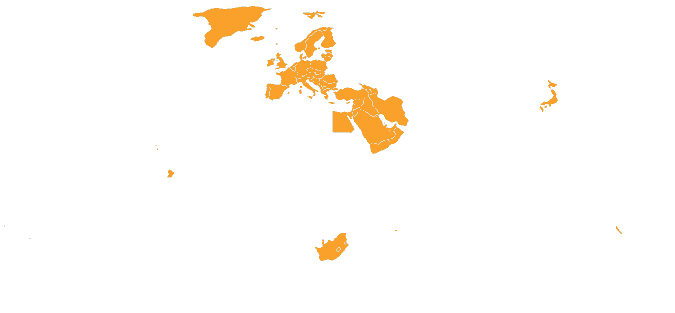
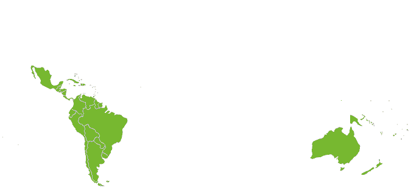
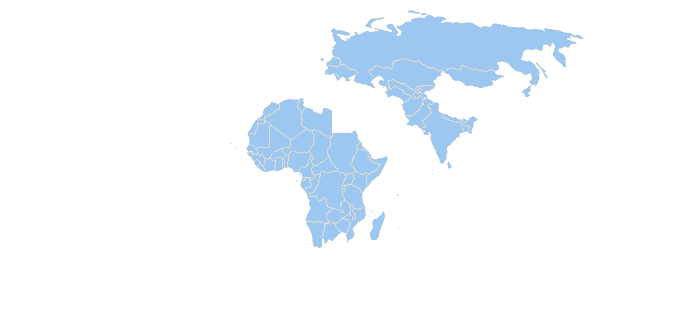
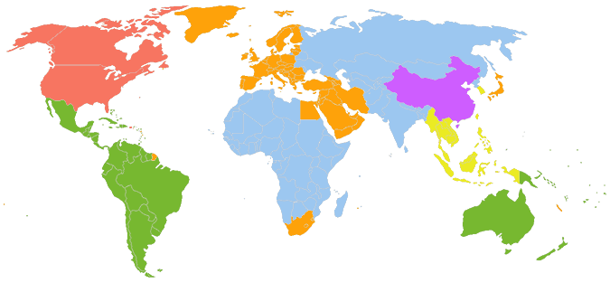

Codis de protecció regionals |
Els discs de DVD o Blu-ray poden contenir un o més codis de regió o zones que indiquen en quines àrees del món es pot distribuir. Les especificacions de cada equip reproductor indiquen quina zona poden reproduir que coincideix en la zona en la qual s'ha venut. Els discs sense codi de regió són anomenats "totes les regions" o "regió 0", és a dir, contenen tots els codis de regió (1,2,3,4,5 i 6) i significa que poden ser reproduïts en qualsevol aparell reproductor. |
Regió 1 |
Estats Units,Canadà,Bermudes i territoris estatunidencs com Puerto Rico i les Illes Verges Americanes> |
Regió 2 |
|  |
Europa, Grenlàndia,l'oest d'Àsia, Egipte, Japó, Sud-àfrica, Lesotho, Swazilàndia, Dependències d'ultramar franceses, Dependències d'ultramar britàniques i el Regne dels Països Baixos |
Regió 3 |
Regió 4 |
|  |
Oceania (excepte Nova Caledònia), Amèrica Central (excepte Puerto Rico i les Illes Verges) i a Amèrica del Sud (excepte la Guaiana Francesa) |
Regió 5 |
|  |
Àfrica (excepte Egipte, Sud-àfrica, Lesotho i Swazilàndia), els països de la zona central d'Àsia incloent els de la CEI, Mongòlia i Corea del Nord |
Regió 6 |
Regió 0 |
|  |
Informal, no és una especificació oficial i pot ser reproduït en totes les regions.
|
|